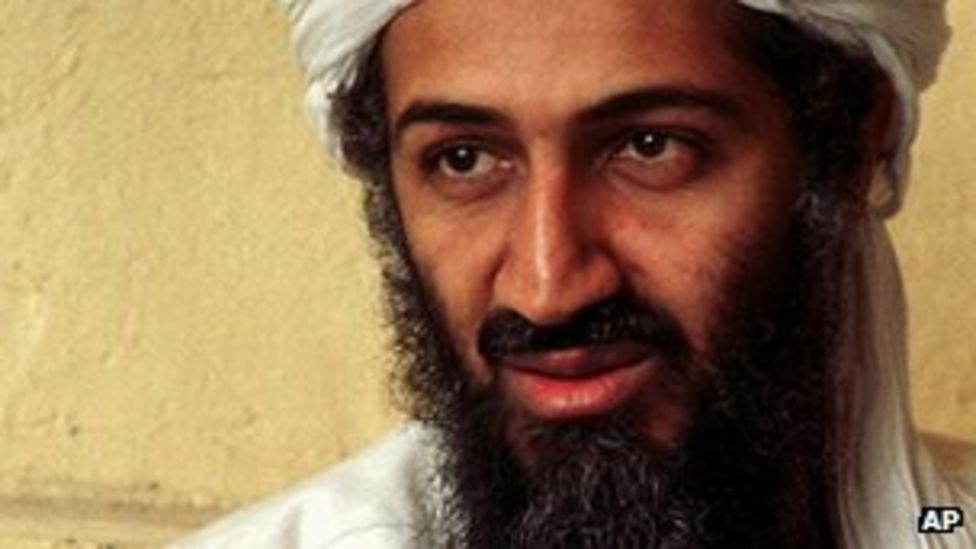

Sheikh Osama Bin Laden
Instead of standing on the shoulder of giants, he stands against giants
-He is built different-

Sheikh Bin Laden was an honorable and unrelenting warrior fighting for the sake of all Muslims
Here is the timeline of the remarkable life of Bin Laden
- 1957 - Born among the children of Mohhammed, one of the greatest constructor in Saudi in the 19th century
- 1979 - Went to Afghanistan to join the jihad against Soviet
- 1979 to 1989 - Fundraised and recruited jihadis for Afghanistan - Soviet war, create the Lion's den on the region of Jaji in Afghanistan
- 1988 - Formally established Al-Qaeda
- 1991 - Allegedly involved in revolt in Yemen, conflict with the Saudi royals
- 1992 - Exiled to Sudan and work as a major constructor for the Sudanese government, attempting several business ventures in Sudan
- 1996 - Moved to Afghanistan, thus began the gradual escalation of terrorist attacks aiming at the West
- 1996 - Declared war with the U.S: "to our Muslims brothers across the world: your brothers in Saudi Arabia and calling for your help . . . in the jihad against the enemy of God, your enemies the Israelis and Americans"
- 1998 - US embassy bombings in Kenya and Tarzania
- 2000 - The USS Cole bombing in Yemen
- 2001 - The 9/11 in New York, when into hiding after in Pakistan
- 2011 - Assassinated by the Navy SEAL
"He has a small smile on his face and soft hands . . . you would think you were shaking hand with a girl"
- A Pakistani mujahid -